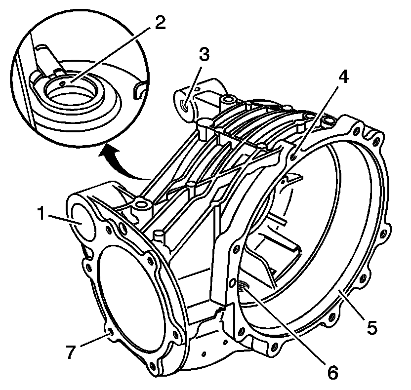
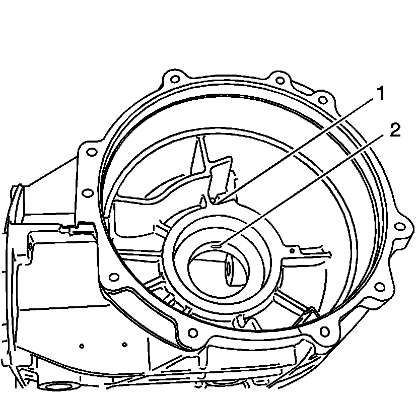
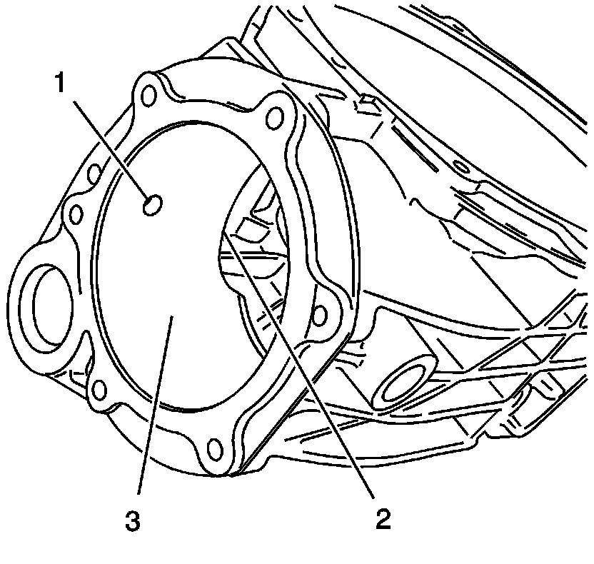
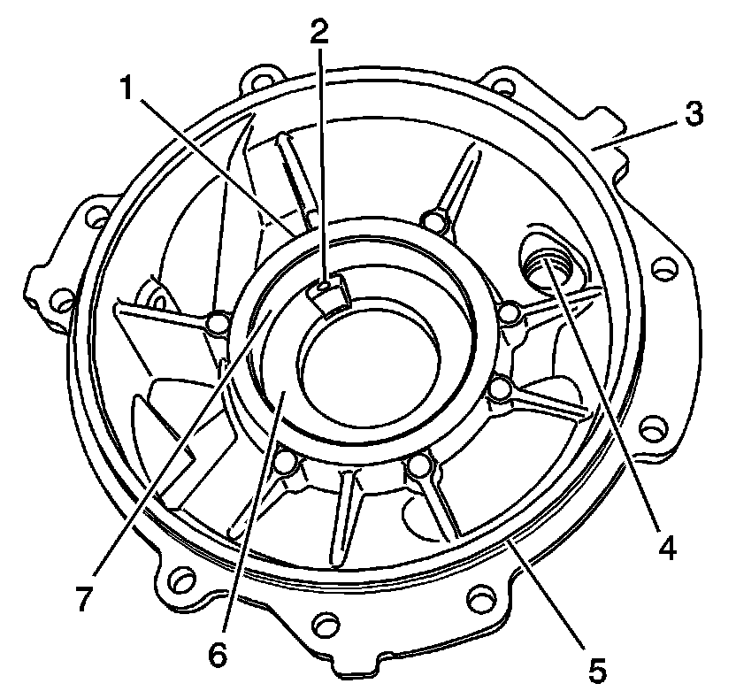
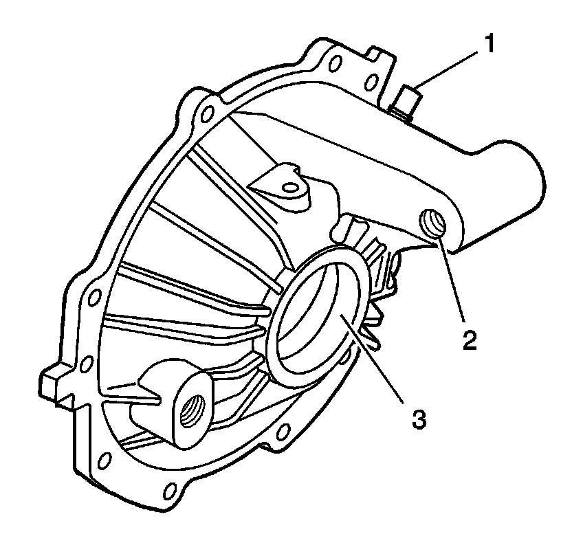
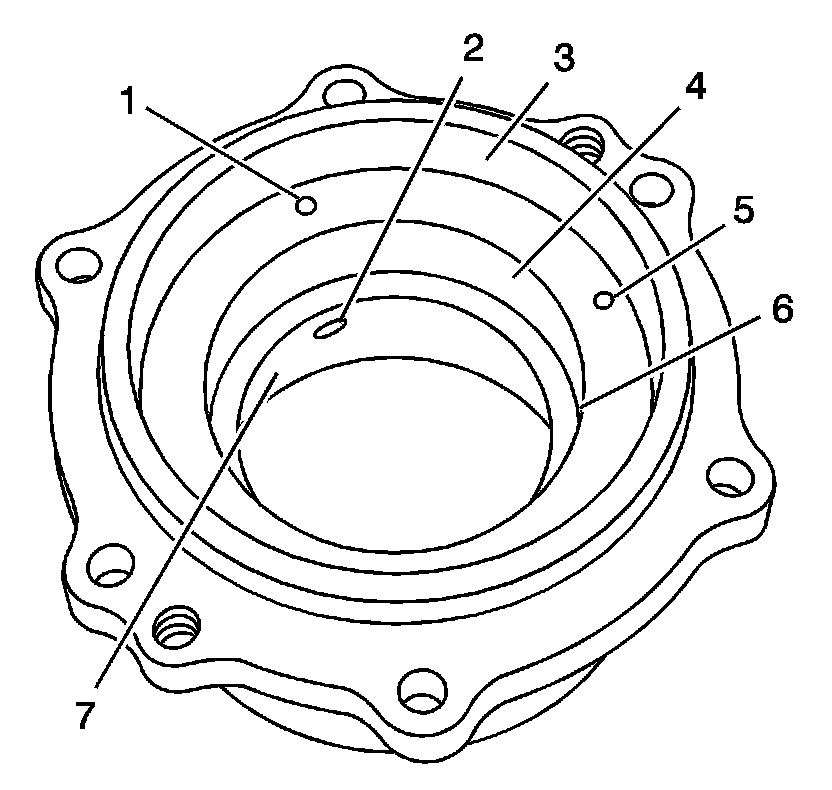
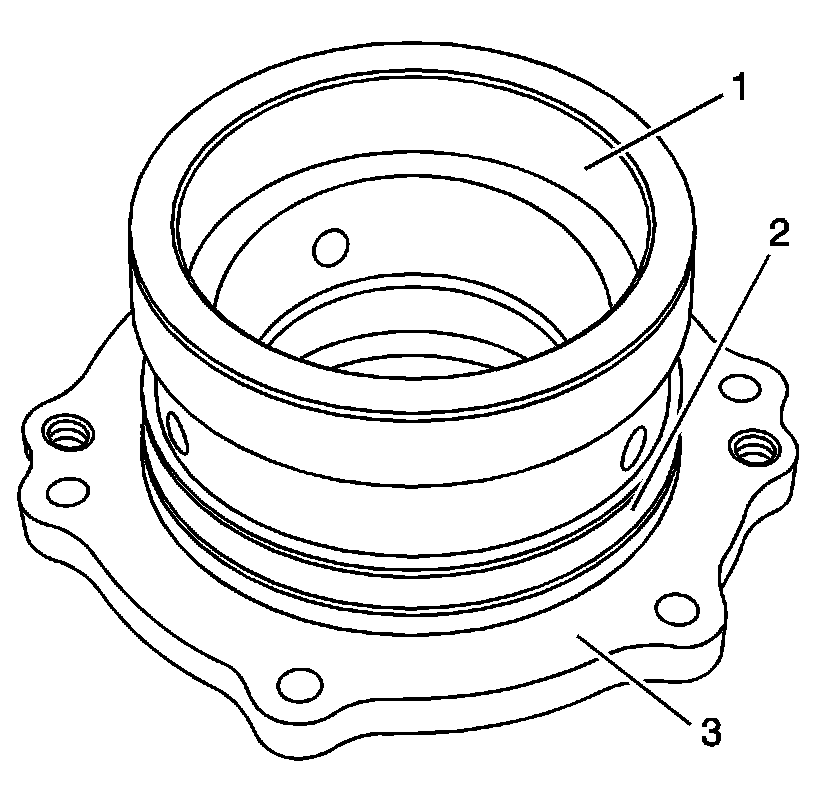

Differential Axle Housing: Service and Repair
Differential Housing Cleaning and Inspection
Differential Housing

Caution: Refer to Safety Glasses Caution (Safety Glasses Warning) .
1. Clean the differential housing in solvent.
2. Clean and inspect the differential housing for the following:
* The mounting bolt threads (3)
* The case cover bolt hole threads (4)
* The O-ring sealing surface for nicks or burrs (5)
* The drain plug hole threads (6)
* The axle seal area (2)
* The pinion bolt hole threads (7)
* The bushing bore (1)
* Cracks in the housing, if removed

3. Clean the oil passage between (1) and (2), in the axle bearing bore.

4. Clean the oil passage between (1) and (2), in the pinion carrier bore.
5. In 2 locations (3) inspect the pinion housing surface.
Differential Carrier Cover

Caution: Refer to Safety Glasses Caution (Safety Glasses Warning) .
1. Clean the differential carrier cover in solvent.
2. Clean and inspect the differential carrier cover for the following:
* Clean the oil passage between (1) and (2), in the axle bearing bore.
* Inspect the cover flat (3) for nicks and burrs.
* Clean the fill plug hole threads (4).
* Clean the O-ring groove (5).
* Inspect the race and shim surfaces (6) and (7).

3. Inspect the differential carrier cover exterior for the following:
* The vent for proper operation (1)
* The mounting bolt threads (2)
* The axle seal mounting surface (3)
Drive Pinion Carrier

Caution: Refer to Safety Glasses Caution (Safety Glasses Warning) .
1. Clean the drive pinion carrier housing in solvent.
2. Clean and inspect the drive pinion carrier housing for the following:
* Clean the oil passages between holes (1) and (2) and between holes (5) and (6).
* Inspect the pinion seal area (3) and the bearing races (4, 7) for damage.

3. Clean and inspect the following:
* The O-ring groove (2) for nicks and burrs
* The flat surface (3) for nicks
* The races (1)